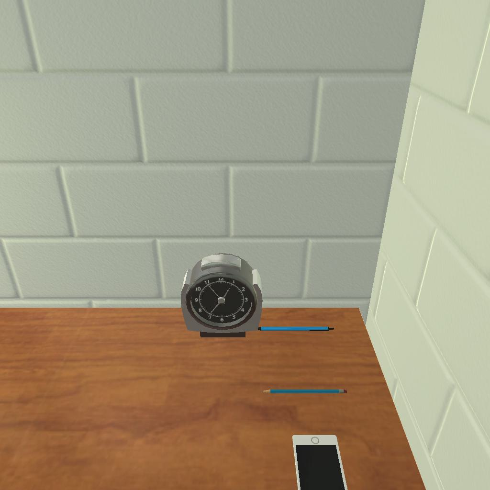

---------------------------------------------------------task: 8---------------------------------------------------------
--------------------------------------------------------------------------------------------------------------------------------------------------------------------
--------------------------------------------------------------------------------------------------------------------------------------------------------------------
Step:--------------------------------------------------------------------------7-------------------------------------------------------------------------------
----------------------------------------
VLM Prompt:
Image1:
Image2:
**Instruction**
1. Analyze the provided images to identify all visible household objects and compare the difference between images (e.h. whether the object is opened or not and taken on hand or not), focusing on those relevant to the task description "put a laptop in desk."
2. Use the analysis of images and the task hint "The agent must find an object of the desired type, pick it up, find the correct location to place it, and put it down there." to answer the question: what is the most reasonable action in the choices for the task description "put a laptop in desk"?
3. Decide and write the answer using the template: The answer is: (i): , where i is the real number. If there is no desired object in images, search every place based on **Initial Observation** to find the object. And if no one is exactly correct, choose a similar answer.
**Initial Observation**
You are in the middle of a room. Looking quickly around you, you can see bed (1), garbagecan (1), desk (1), sidetable (1), drawer (1-5), laundryhamper (1)
**Answer Choices**
(1): go to bed 1
(2): go to garbagecan 1
(3): go to sidetable 1
(4): go to drawer 1
(5): go to drawer 2
(6): go to laundryhamper 1
(7): go to drawer 3
(8): go to drawer 4
(9): go to drawer 5
(10): take alarmclock 1 from desk 1
(11): take cellphone 1 from desk 1
(12): take pencil 1 from desk 1
(13): take pen 1 from desk 1
(14): examine desk 1
**Answer**
Let's think step by step by following the instructions.
----------------------------------------
----------------------------------------
Original Response:
First, we analyze the provided images. In both images, we can see a desk with an alarm clock, two pencils, and a cellphone on it. There are no other visible household objects, and no objects appear to be opened or taken in hand.
Next, we use the analysis of images and the task hint to answer the question. The task is to "put a laptop in desk," which means we need to find a laptop and place it on the desk. Since there is no laptop visible in the images, we should search for it based on the initial observation.
From the initial observation, we know there are several drawers in the room. It is common for laptops to be stored in drawers when not in use. Therefore, the most reasonable action would be to search the drawers for the laptop.
The answer is: (4): go to drawer 1. If the laptop is not found in drawer 1, the agent can proceed to check the other drawers in numerical order.
----------------------------------------
----------------------------------------
>>> Refine Original VLM Response and Get Pure Action: go to drawer 1
----------------------------------------
-----------------------------------------------------------------
Running time: 14.029815912246704 seconds
Total Money: 3.202010000000002
-----------------------------------------------------------------
-----------------------------------------------------------------
Text Observation:You arrive at loc 4. The drawer 1 is open. On the drawer 1, you see a book 1, a cd 1, and a pen 2.
-----------------------------------------------------------------
UNSUCCEED